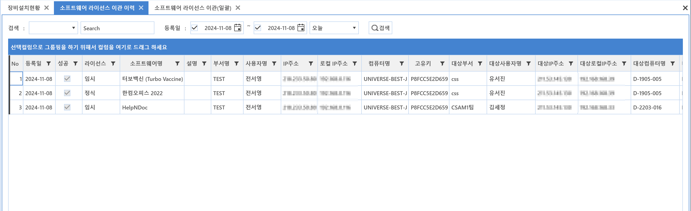

5-5-3. 이관이력
5-5-3. 이관이력
Source: https://www.sweeper.or.kr/etc/manual/553.html
5-5-3. 이관이력
5. 소프트웨어 ›› 5-5. 라이선스 이관 ››


라이선스 이관 이력을 확인 합니다.


참고사항
- [SW별로 이관 작업 후 미인가 상태이면 이관 장비로 라이선스 복구]
이관대상 장비가 라이선스를 받지 못하는 경우, 이관 장비로 라이선스 복구 여부를 체크하는 항목입니다.
이관대상 장비가 라이선스를 받지 못하는 대표적인 경우로는 라이선스 소유 부서가 다른경우, 하위부서포함에 해당하지 않는 경우 등이 있습니다.
이때, 이관이 된 이후 라이선스 정리에 의해 할당정보가 사라진 것이기 때문에, 이관이력에는 "성공"으로 노출 됩니다.
© Copyright SWeeper Inc.. All Rights Reserved